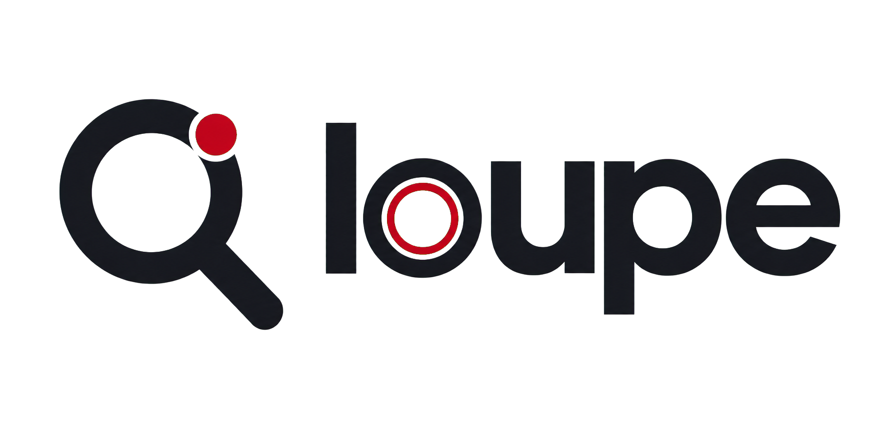
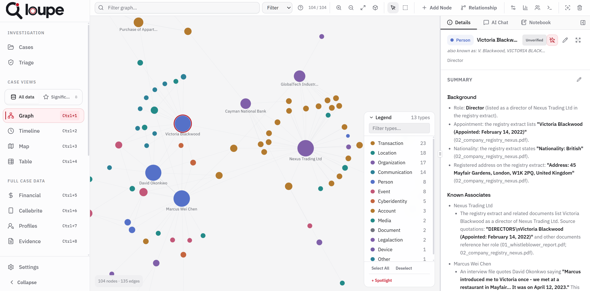

Clarity over spectacle
Visual drama should reveal structure. Never decorate for its own sake.
Loupe brand system
A visual and editorial reference for product pages, marketing, reports and evidence-led documents. Distinctive enough to recognise. Restrained enough to trust.
01 / Brand foundation
Loupe turns raw case evidence into connected, source-linked intelligence. The brand should make complexity feel structured, powerful and accountable.
Visual drama should reveal structure. Never decorate for its own sake.
Sources, claims and provenance should always feel tangible and connected.
AI supports judgment. It never replaces or obscures the investigator.
Restraint, precision and clear boundaries communicate evidence-grade infrastructure.
02 / Logo system
Use the full wordmark whenever space allows. The lens mark may stand alone for favicons, application icons and compact signatures after Loupe has been clearly identified.

Maintain one signal-dot diameter around every side of the mark or wordmark.
03 / Colour
Loupe red identifies signal, action and active state. It is not a decorative wash. Neutral surfaces carry the interface; semantic colours describe the evidence.
CMYK values are starting points; proof against the printer profile
Use steps, not opacity, to preserve predictable contrast
Reserve for entity and data meaning; never use randomly
04 / Typography
Display type creates decisive hierarchy. Body type remains calm and readable. Mono type labels systems, sources and precision metadata.
Bring structure to complex evidence.
Use weights 500–700. Tighten display headlines as size increases.
Aa Bb 0123
Use 400 for body, 500 for labels and 600 for controls or short emphasis.
Every finding stays tied to the evidence behind it.
Use sparingly for indices, provenance, identifiers, dates and statuses.
SOURCE / PAGE 18
CONFIDENCE / HIGH
52 / 50 · 600 · −5.5%38 / 39 · 600 · −4.5%26 / 30 · 600 · −3.5%18 / 25 · 400 · −1%14 / 22 · 400 · 005 / Layout and rhythm
Use generous negative space around decisive statements, then switch to controlled density for evidence, data and comparison. The contrast is part of the brand.
24 px desktop gutters; collapse to 6 and then 2 columns.
48 px desktop page margins; 28 px on narrow screens.
Prefer 7/5 and 8/4 spans over equal three-column compositions.
Use 1 px dividers to show systems, boundaries and progression.
06 / Interface language
Components should feel engineered, not decorated. Use subtle elevation, restrained radius and one clear red action or state per composition.
Action hierarchy
Secondary actions stay present without competing with the task that matters.
06_interview_marcus_chen.pdfPage 18 · exact passage
Use #292B32 by default and #3B3D44 for stronger boundaries.
Small radii keep the system controlled and avoid a soft consumer feel.
Prefer tonal separation and long, restrained shadows over floating cards.
Dots mark active states, verified status and meaningful network nodes.
07 / Data visualisation
Every chart and graph must preserve legibility, semantic consistency and a route back to the evidence. Colour identifies type; emphasis identifies investigative focus.
A person is blue in a graph, timeline, table and report.
Use brand red for selection, investigative significance and primary action—not entity type.
Relationships should support nodes and labels, not overwhelm them.
Pair colour with labels, shapes, patterns or text for accessible interpretation.
08 / Product imagery
Screenshots should demonstrate genuine workflows and current interface states using invented people, organisations and documents created specifically for demonstration.

Do not recreate or approximate application screens in marketing artwork.
Label the view, identify fictional case data and retain enough chrome to feel credible.
Never use live customer material, real case identifiers or recoverable personal information.
09 / Editorial voice
Loupe speaks like an expert partner: direct enough to guide, rigorous enough to trust and human enough to recognise that investigators—not models—make the judgment.
Name documents, devices, transactions, pages and sources. Avoid empty claims about “insights” or “transformation”.
Lead with what Loupe does and how it works. Let provenance and control carry the authority.
Use plain language for sophisticated ideas. Short sentences give important claims weight.
Describe AI as bounded assistance. Keep expert review, curation and accountability visible.
10 / Reports and PDFs
Long-form documents use a light reading surface, restrained brand accents and persistent provenance. The page should feel like evidence infrastructure—not a dark website printed out.
A concise statement of what this section establishes, written for a reader who may not know the case.
Evidence white or pure white reduces ink use and supports long-form comprehension.
Dark brand fields work best for section dividers, executive summaries and report covers.
Use source name, page or row, and quote reference beside the finding—not in a distant appendix only.
Headers and footers should carry confidentiality, case identity, version and pagination.
A4 · 14 mm outer margin · 11 pt body · 15 pt leading · red limited to headings, rules and evidence emphasis.
11 / Implementation tokens
These starter tokens cover the dominant visual language. Extend semantically rather than creating one-off colours, spacing values or component-specific shadows.
/* Core visual tokens */
:root {
--loupe-bg: #0b0c0f;
--loupe-surface: #111216;
--loupe-surface-2: #17181c;
--loupe-ink: #f7f7f8;
--loupe-ink-soft: #bfc1c8;
--loupe-muted: #9a9da5;
--loupe-line: #292b32;
--loupe-red: #b41624;
--loupe-signal: #e33b4c;
--loupe-signal-soft: #f35d6d;
--font-display: "Space Grotesk", sans-serif;
--font-body: "IBM Plex Sans", sans-serif;
--font-evidence: "IBM Plex Mono", monospace;
--radius-control: 5px;
--radius-panel: 8px;
--space-unit: 4px;
}/* Print-safe document starter */
@page {
size: A4;
margin: 14mm;
}
body {
color: #15161a;
background: #f7f7f8;
font: 11pt/1.5 "IBM Plex Sans", sans-serif;
}
h1, h2, h3 {
font-family: "Space Grotesk", sans-serif;
letter-spacing: -0.04em;
}
.source-citation {
border-left: 2px solid #e33b4c;
padding-left: 10pt;
color: #5f626b;
break-inside: avoid;
}
@media print {
* {
print-color-adjust: exact;
}
}When in doubt: simplify the surface, strengthen the hierarchy, label the evidence and preserve the path to source.